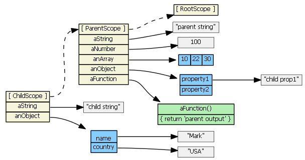
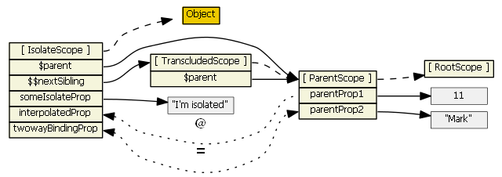
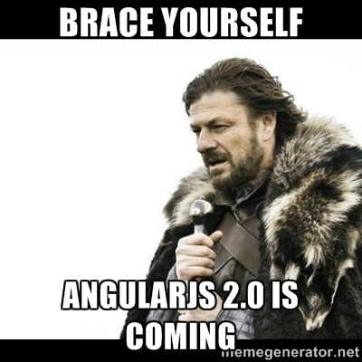

Angular Intensive Workshop
Created by Thomas `tomatao` Hudspith-Tatham / tomht@thinkful.com
What are we going to talk about?
- Problems with Angular
- High Level Architecture
- Modularity and Routing
- Final Tips
Oh and also…
Working with a sample App
Common Problems With Angular
$scope trees...
The digest loop!!

$DIRECTIVE SCOPE TREES!!
JavaScript :D
var i = 1;
// some code
i = i + ""; // oops!
// some more code
i + 1; // evaluates to the String '11'
i - 1; // evaluates to the Number 0
0.1 - 0.3; // evaluates to -0.19999999999999998
NaN == NaN; // evaluates to false
// etc... with sprinkles of media devices and browsers
Conclusion?
Angular JS is Complicated
Slow Performance
Multiple watches, digests and assets...
Where to put code?
SPAs - New Ecosystem
Icing on the cake?
It's about to change
Recently released: Angular v2 TodoMVC it's in alpha
(Not to mention ES6)
Do solutions exist?
Yes... they do
Too Complex?
“ Programming is the art of doing one thing at a time. ”
- Michael C. Feathers, Working Effectively with Legacy Code
“ Simplicity is prerequisite for reliability. ”
- Edsger W. Dijkstra, some book?
- Be explicit
- Clear and minimal dependencies
- Clear and minimal boundaries
- Clear data flow
JavaScript can be your friend
- Pass by Sharing
- Higher order Functions
- Tooling
hold on a minute... JavaScript was a problem!?
How to simple?
Same old ideas…
- Be simple
- Manage initial state
- Use Layers for dependencies and boundaries
- Attempt modularity
- Composition over inheritance
- SOLID DRY YAGNI SOCs
Is this all a bit too general?…
Higher Level Goals
Why?

// magic, do not touch.
The Goals
| Scope | Goal |
|---|---|
| Individual Files | Simple and Small |
| Whole Code Base | Manageable |
| The Application | Resilient and Fun |
| Integration | Configurable |
| Features | Modular |
By products of these:
- Testability
- Scalability Neat, we just solved performance too :D
- Observable
Angular 2 is Coming?
Make migration easier
- More code into components.
- Reduce use of scope, smaller controllers!
- Clear Hierarchies.
- More sophisticated routing strategies.
- Build systems in place (ES6 and AtScript)
SPAs are a new ecosystem?
It doesn't matter ¯\_(ツ)_/¯
High Level Architecture
“ Without requirements or design, programming is the art of adding bugs to an empty text file. ”
- Louis Srygley - Application Architect UPS
What do we want from Layers?
- Smaller Files
- Clear Dependency Structure
- Clear Hierarchy
- Easier to change
- Easier to designate and allot code
- More DRY
- Easier to debug
Bad Architecture
No layering strategy
Symptom: Fat Controllers
- bunch of http requests
- redirects
- reads localStorage
- bunch of function definitions with core logic
- headaches
Works for a while - then you realise it's too big to change and doesn't work
Prevention is better than solution!
Examples in the Wild:
- goread - 1134 lines
- coinkite - 451 lines
- bootstrap-magic - 161 lines
- LookAround - 263 lines
- bamboo-status - 407 lines
What happens on boot?
Difficult to test
Debugging just to understand logic!
Sharing state between controllers?
Need to duplicate state!
So Tom... Which layers do you suggest?
- Configuration
- Core Module
- Feature Modules
- Routes
- Integration
“ Walking on water and developing software from a specification are easy if both are frozen. ”
- Edward Berard, The Object Agency, Inc
Focus on the requirements
Actions, aka Interactions, Controls, Service Layer or Use Cases
Modularity and Routing
Routes Layer
“ Routing for JavaScript Applications is like a party at the bottom. ”Eh?
- Thomas `tomatao` Hudspith-Tatham, Just Now
What does that even mean?
- Routes depend on everything else.
- Nothing depends on routes.
- They have their own modularity too.
- Initialisation logic, authorisation checks, redirects and little helpers.
- Compose the other pieces for fun!
- Can try out new ideas, designs, UX and have a party!
- ♪ヽ( ⌒o⌒)人(⌒-⌒ )v ♪
Cool benefit from being simple and modular
Show me an example!
View Controller for Add Course
angular.module('routes')
.constant('addCourseView', {
controller: 'addCourseCtrl',
controllerAs: 'aC',
})
.controller('addCourseCtrl', function(Course, addCourse, closeModal) {
var vm = this;
vm.course = Course.get();
vm.addModalId = 'create-course-modal';
vm.modalAction = function modalAction() {
return addCourse()
.then(function() {
closeModal(vm.addModalId);
});
};
});
Folder names that reflect the route
Decouple routes from URIs
The Configuration For It - uiRouter
angular.module('routes').config(function(){
$stateProvider
.state('manageLayout', {
abstract: true,
templateUrl: ROUTESURL + 'manage/manage.tmpl.html',
controllerAs: 'manage',
controller: 'manageCtrl',
resolve: {
weekResolve: 'appResolve'
}
})
.state('courses', {
url: URLMAP.courses,
parent: 'manageLayout',
views: {
addCourse: angular.extend(addCourseView, {
templateUrl: ROUTESURL + 'manage/add-course.tmpl.html',
}),
anotherView: ...
}
})
});
Just one URL per file with multiple smaller controllers
One route per file! (long lived app with moving parts!)
Resolve blocks (explicit dependencies with perks) for named routes!
Small files!
Seriously one file per route
Modules Layer
Self contained features
Action Centred Structure
Nice to have semantic business logic that delegates
So use layers inside modules too!
- State Layer
- Boundaries
- Helpers
- Actions
- Components
- Forms?
“ The goal for our software architecture is to provide the key mechanisms that are required to implement a wide variety of cross-layer adaptations described by our taxonomy. ”
- Soon Hyeok Choi (2008), A Software Architecture for Cross-layer Wireless Networks
But what about global states and actions? User store, notifications services and Session storage!?
…special module!
Same as others - but shared!
Other modules can depend on it
If the others are using it, does that mean it is it's own layer?...Yes!
What's in a Core Module?
- Application Wide State
- User State
- Session State
- Base Model / Collection (state)
- Same layers as any other module
- Try to keep it small
“ You could probably write an entire book on why global state is bad. ”
- Stack overflow - Top answer to some question
High level Logic, so the whole application is fragile to the core's changes
Base Model Example
.factory('Model', function(){
function Model(){
this.data = {};
}
Model.prototype.set = function(modelData, value){
if (typeof modelData == "string")
this.data[modelData] = value;
else
angular.extend(this.data, modelData);
};
Model.prototype.get = function(prop) {
if (prop == null) return this.data;
return this.data[prop];
};
Model.prototype.reset = function() {
// keep reference but clear all properties
for (var member in this.data) delete this.data[member];
};
return Model;
});
Base Model Tests
describe('Model', function () {
var modelData = { id: 123, name: 'TEST001' };
beforeEach( module("models") );
it('should start empty', inject(function(Model) {
expect(Model.get()).toEqual({});
}));
it('should get the updated object', inject(function(Model) {
var m = Model.get();
m.id = 'newIdValue';
expect(Model.get()).toBe(m);
}));
it('should provide a set method', inject(function (Model) {
Model.set(modelData);
expect(Model.get()).toEqual(modelData);
}));
});
Application Wide Components
- Reused HTML behaviours
- Often third party libs
- Modal, Popup, Tooltip, etc…
I find AngularStrap to be really good
Components don't touch state!
Make the most of isolated scope and attributes
Application Wide Actions
- Notifications
- Analytical Events
- Custom logging and profiling
Example Notification Action
.factory('notify', function(Notifications, uuid) {
// types: success, info, warning, danger
return function notify(type, message){
// add to stack, stack pops itself after time
// notifications component will listen to stack and display
Notifications.push({
id: uuid(),
type: type || 'info',
message: message,
});
};
})
`Notifications` extends the Base Collection
Using a uuid helper service
Application Wide Helper Service
- UUID
- Custom extend service for prototypes and constructors
- Form DDO Builder
- Any small helper
Application Wide Helper Service extend Prototype
.factory('extendPrototype', function(){
return function(protoProps, staticProps) {
var parent = this,
child;
if (protoProps && _.has(protoProps, 'constructor')) {
child = protoProps.constructor;
} else {
child = function(){ return parent.apply(this, arguments); };
}
_.extend(child, parent, staticProps);
var Surrogate = function(){ this.constructor = child; };
Surrogate.prototype = parent.prototype;
child.prototype = new Surrogate();
if (protoProps) _.extend(child.prototype, protoProps);
child.__super__ = parent.prototype;
return child;
};
});
Application Wide Gateways - aka Boundaries
High level abstractions for a single entry point
Good for transactions or persistence layers
- IndexedDB
- Firebase
- HTTP
- LocalStorage with Promises
- Web Sockets
I like to make multiple abstractions around these for store specific gateways
Using Core Module Gateways inside a Feature Module
IDB gateway for a `Courses` persistence layer
angular.module('indexeddbGateways')
.factory('indexeddbCoursesGateway', function( $q, idbGateway ){
var coursesPromise = idbGateway('Courses');
return {
save: function(course){
var d = $q.defer();
course = angular.copy(course);
coursesPromise.then(function(store){
store.put( course, function success(id){
d.resolve(angular.extend(course, { id: id }));
});
});
return d.promise;
},
getAll: function(){
var d = $q.defer();
coursesPromise.then(function(store){
store.getAll(function success(courseList){
d.resolve(courseList);
});
});
return d.promise;
}
};
});
The idbGateway connects Tables (Stores), and returns a promise that resolves the said store - then we can `put`, `getAll`, etc…
Feature Modules?
They have the same layers as core.
You might want to nest modules too.
Where to put what?
- Saved Data - State (Models, Entities, Collections, Stores)
- Feature Logic - Actions (Use Cases, Interactors, Service Layer)
- HTTP Calls - Gateways (Boundaries)
- A Form - Components (Directives)
- Form Validation - Helper Service or Action
- Initial Data Sync With Server - Composed Actions
Name modules by their feature
REMEMBER NOT TO DEPEND ON OTHER MODULES!
A Note about Modules
Not truly hierarchical - you can accidentally inject from another's dependencies :/
Mismatch with AMD and CJS11 - they're upside-down
They don't load any files
Tom's Rant about State
A trilogy of 5 parts
Module State Layers (aka Stores, Models)
- Singletons is the Angular way
- Two types: Collections and Entities
- No boundary transactions
- Purely data structures with helper methods
- Lodash integration is nice
- Make copies and subsets instead of mutating them
- Pagination Store
- Active Students Store
- Currently Selected Student Store
- Filters are expensive on digest loops
- To minimize watches -> maintain object references
Module State Layers #2 ($scope)
- States live in isolation, not on
$scope $scopeis just for controllers$scopecan reference states, not own them- These ideas were confirmed by Angular2
- Dependency injection cool, use it to avoid
$scope - Rarely need
$watch,$applyand$observe - Don't mutate state directly! Let actions do it!
Module State Layers #3 (Directives)
- Get their data from controllers (maximises reuse)
- Get passed data from views
- Two way or one way..
- Maximise attributes
- Isolate scopes are good
- Can maybe use states to check things but don't mutate state here!
Module State Layers #5 (Private Data)
- Controllers don't mutate state
- Controllers to call actions, actions update state
- Think of stores as read only
- Easier to reason about updates
- Easier to manage initialisation and route changes
- Easier to share logic
- Flux & Dispatcher or Use Case Driven Design
- Could just replace with developer discipline and reviews
Example of Course Collection State
angular.module('courseManager')
.factory('CourseList', function(BaseCollection) {
var CourseList = BaseCollection.extend({
addStudent: function(courseId) {
var course = this.get(courseId);
course.studentCount = (course.studentCount != null)
? course.studentCount + 1 : 1;
}
});
return new CourseList();
});
Using the said Core Module's extend prototype service
Adding specific methods for this store
Uses new to work with singleton in an Angular style
Feature Module Actions
The belly of the beast
- State mutations happen here
- Use Case in one place
- Good place for OCP, SOC and SRP
- Depend on State, Boundaries and Helper Services
- Returning promises is super helpful!
Example Add Course Action
angular.module('course-manager')
.factory('addCourse', function(
$interpolate,
coursesGateway,
CourseList,
notify
){
var msgExp = $interpolate(
'Success! Course {{ name }} saved!');
return function addCourse(course){
return coursesGateway.save(Course.get())
.then(function(savedCourse){
notify('success', msgExp({ name: savedCourse.name }));
CourseList.add(savedCourse);
});
};
});
The coursesGateway also returns a promise
Angular interpolate for template strings
Using the notification service from core
Finally mutating the CourseList state and resetting the Course state
What Are Actions Good For?
- Explicit, semantic, business logic
- Initialisation logic, DB sync, pipes to set up multiple states
- Use actions from parent modules if nested?
- OCP - aim to never change them, frozen specs! (make new actions when possible)
Boundaries
or Gateways
- We saw one earlier for indexedDB Courses
- Transactions for specific stores or endpoints
- Make use of Core Module Gateways
- The single point of entry is still in Core - easier to switch
- Don't modify state! Just transactions that send and receive data
- Actions can use boundaries and save the returned data into States
- Controllers and States should have no idea about the boundaries
Interlude about Donkeys and Kittens
Controllers donkeys and kittens
They live inside routes where the party happens, not inside modules
Depend on modules and map their states onto views
Use module actions when users do stuff
“ Angular JS Controllers should be treated more like little kittens than donkeys ”
- Thomas `tomatao` Hudspith-Tatham, Just now
Poor donkeys :(
Integration Layer aka main
Just a Few Files
Depends on the configuration
Doesn't really do much, just loads the other layers!
The Configuration
Top of the pile!
Anything can depend on it
Nice Things For Configuration
- Environment setting e.g.
DEV:true - API Base URL
- User Name and API Token
- Modules might have their own private configurations
- IoC for some modules? Nice in E2E testing setups to use diff gateways
- Protractor can't really check a Ruby managed DB so easily
- Can use json-server gateways just for E2E
- Assuming your Boundaries have plenty unit tests ;)
- Locale file locations
- Developer specific tweaks for debugging e.g. Auto login
Performance and Debugging Tips
- One time bindings and dandy
- Don't unit test controllers?
- Filter in resolve blocks
- Lodash chains are kinda fancy
- Any functions inside a view 2 way binding are expensive
- That includes filters
- ngRepeat
Track byis pretty whiz! - Don't even use jQuery at all, the need to
$applyis so rare! - And some nice tricks to research!
$compileProvider.debugInfoEnabled(ENV.DEV);
$httpProvider.useApplyAsync(!ENV.DEV);
One more thing...
The EcoSystem
- Yeoman is nice
- SlurpJS is also nice
- Gulp is super
- Webpack, brunch, systemjs, broccoli, browserify, babeljs, etc…
- So much to choose from - yeoman and gulp is often enough
One more thing...
Debugging
- Tests for state and actions
- Lots of
_.cloneto tame objects - ngStrict for dependency problems?
- Says everything is a problem if you use ngAnnotate though
- logging and config environment variables
- Same old tricks, it's JavaScript
- The docs are vital
One more thing...

One more thing...
Let's dive into the workshop project you'll be working with!
One more thing...